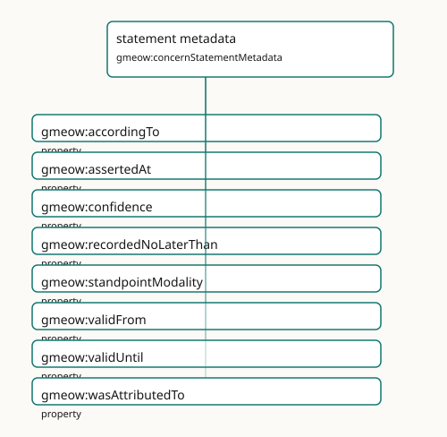

statement metadata
- IRI: https://blackcatinformatics.ca/gmeow/concernStatementMetadata
- CURIE:
gmeow:concernStatementMetadata
Native RDF 1.2 reifiers, statement annotations, confidence, provenance, and temporal scope.

Participating Slices
- provenance - GMEOW Provenance Module
- standpoint - GMEOW
StandpointModule - temporal - GMEOW Temporal — intervals, instants, temporal frames, time-scoped relations
Terms
| Term | Category | Definition |
|---|---|---|
gmeow:accordingTo |
property | The standpoint / frame within which the annotated statement is asserted true — according to whom. DISTINCT from gmeow:wasAttributedTo (which source RECORDED the claim) and gmeow: |
gmeow:assertedAt |
property | The instant an agent observed or asserted the annotated claim (e.g. an email Date header or a vCard REV) — a witness that the fact held at that instant. Distinct from validity (val |
gmeow:confidence |
property | Confidence in a claim, in the closed interval [0,1], attached to the statement it qualifies. |
gmeow:recordedNoLaterThan |
property | A DERIVED upper bound (terminus ante quem) on when the annotated claim was committed to a record — typically taken from the modification time of its source carrier (gmeow:sourceMod |
gmeow:standpointModality |
property | The belief value a standpoint assigns the annotated proposition — how the standpoint holds it, not merely that it holds it. This single axis is at least as expressive as BOTH t |
gmeow:validFrom |
property | The instant from which the annotated statement is asserted to hold. |
gmeow:validUntil |
property | The instant until which the annotated statement is asserted to hold. |
gmeow:wasAttributedTo |
property | Ascribes responsibility for an enduring entity to an agent — authorship, ownership, or accountability. The endurant counterpart of gmeow:wasAssociatedWith (which ties an activity t |